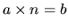
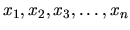

| DDF |
An integer a is a positive factor of an integer b if a is greater than zero and there exist some integer n such that .
Consider a sequence of integer . This sequence is a Decimal-Digit Factor Sequence (DDF) if each number in the sequence is a positive integer where x1 > 1 and for all positive integers i > 1, xi+1 is the sum of the digits of all positive factors of xi.
The following is a DDF:
17, 9, 13, 5, 6, ... positive factor of 17 = 1, 17 1 + (1 + 7) = 9 positive factor of 9 = 1, 3, 9 1 + 3 + 9 = 13 positive factor of 13 = 1, 13 1 + (1 + 3) = 5 positive factor of 5 = 1, 5 1 + 5 = 6
It is known that any DDF beginning whit a number greater than or equal to 1000 repeats no number greater than or equal to 1000 and contains a number less than 1000. In addition, every DDF beginning whit a number less than 1000 contains no number greater than 999. Thus, every DDF must eventually repeat number less than 1000. It has also been show that every DDF eventually repeats a single number. That is, for each DDF, there exists a number xn, called the last term, such that for all j >n, xj = xn.
Write a program that will find the longest DDF.
200 500 100 150
Input1: 200 500 Output1: 285 66 36 46 18 30 27 22 9 13 5 6 12 19 11 3 4 7 8 15 Input2: 100 150 Output2: 102 36 46 18 30 27 22 9 13 5 6 12 19 11 3 4 7 8 15